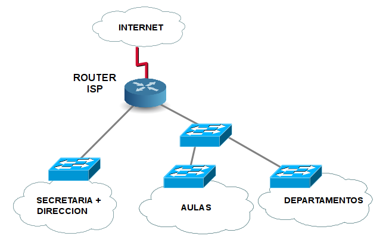
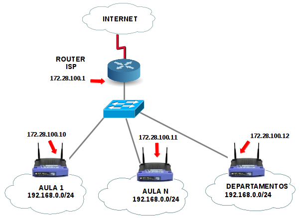
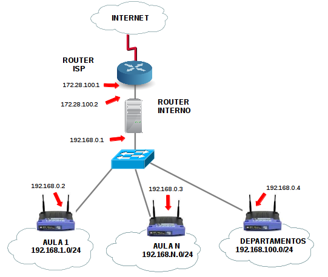
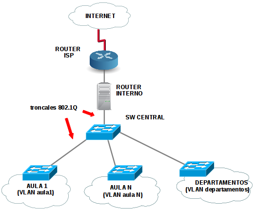
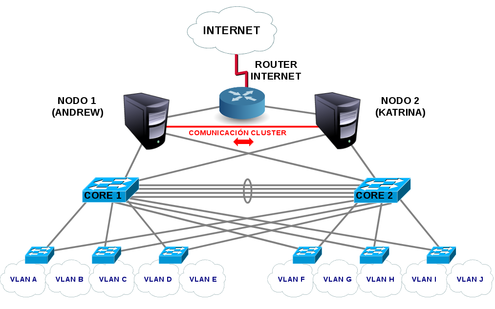

6.2 Mejoras en el diseño de la red de tu organización
1. Introducción
En este capítulo vamos a proponer una serie de recomendaciones a la hora de mejorar el diseño de la red que se implanta en todos los centros públicos dependientes de la Conselleria de Educación.
Como es obvio, desde la administración se propone un modelo simple, sencillo de implantar en los miles de centros repartidos por todo el territorio de la Comunidad Valenciana.
Este modelo de red consiste en dos redes planas separadas, una para aulas y departamentos y otra para secretaría y dirección. Por razones de seguridad, ambas redes no deben estar conectadas y llevan una gestión diferente.
La gestión de la red de los centros se otorga a una empresa por concurso público, y en el momento de escribir este curso, es Telefónica (Movistar) la que la gestiona. En todos los centros se instala un router marca Teldat con conectividad a Internet por fibra óptica - a través de un conversor de medios de fibra a ethernet - a la red del operador, utilizando una tecnología Metroethernet que Telefónica comercializa bajo el nombre de Macrolan. Esta tecnología utiliza redes privadas virtuales (VPN) con el protocolo MPLS.
Este router tiene un módulo con varios puertos ethernet que hace las funciones de conmutador ethernet, y divide los puertos normalmente en tres segmentos de red o VLAN: red de aulas, secretaria/dirección y telefonía IP (ToIP). Cada una de estas tres redes tiene su direccionamiento IP propio.
En esta sección nos centraremos en la red de aulas, que es la candidata a sufrir más ataques debido a que es la que se conecta el alumando. El router del operador proporciona servicio DHCP en el rango privado interno que tienen los centros dentro del direccionamiento privado de clase B 172.16.0.0/12. Cada centro tiene su direccionamiento propio de forma que un centro, en función del número de equipos, puede tener asignada una red /24 con 254 direcciones IP utilizables o normalmente una /23, con 510 direcciones IP utilizables, ya que los centros con muchas aulas de informática y departamentos didácticos pueden sobrepasar fácilmente los 300 ordenadores en el centro. Por ejemplo en un centro educativo de ejemplo se tiene asignado un rango interno con prefijo /23 o 255.255.254.0 como máscara de subred.
En la siguiente figura puedes ver un esquema del modelo de red de un centro educativo típico:

Figura 1. Esquema de red del modelo de centro básico.
En este modelo se ha representado la interconexión de todos los puntos de red a través de conmutadores de acceso e intermedios hasta que finalmente se interconectan al router central de salida a Internet.
Por ejemplo, es habitual que en cada aula haya un conmutador que recoge las tomas de red de todos los puestos del aula y a su vez, todos los conmutadores de aulas, se recogen en un conmutador central o bien directamente en el conmutador integrado que tiene el router del proveedor, suponiendo que tiene puertos suficientes. En estos casos, estos conmutadores de acceso e intermedios suelen ser equipos no gestionados o sin ninguna configuración: simplemente dejados caer y concentrando todas las conexiones de aulas hasta el conmutador central en una red en árbol o estrella extendida, como se puede observar en la figura anterior.
Como se ha comentado, vamos a centrarnos en la parte de la derecha del esquema, donde se encuentra la conexión de aulas y departamentos. Tanto aulas como departamentos se encuentran en la misma subred y por tanto comparten direccionamiento IP para alumnos y profesores, con el peligro que eso conlleva ya que hay visibilidad directa entre ellos.
La ventaja de este modelo es clara: es un modelo simple y sencillo de implantar en todos los centros.
Sin embargo, los problemas que acarrea son varios como:
- Problemas de rendimiento: al interconectar todos los conmutadores entre sí en una estrella, se crea un dominio de difusión (broadcast) más grande. En un switch, el broadcast de nivel 2 (con protocolos como DHCP, ARP, CIFS/SMB, etc) se envía por todos los puertos, así es que llega a todas las aulas afectando al rendimiento de todos los equipos que deben procesar el tráfico de broadcast para ver si está dirigido a ellos.
- Problemas de seguridad: un equipo infectado con un gusano, puede afectar a toda la red del centro y propagarse a los equipos no actualizados correctamente. Estamos hablando lógicamente de gusanos tipo Sasser o Blaster que se propagan por la red local y no los que se propagan por correo electrónico, por ejemplo. También es un problema si un alumno realiza un ataque MITM como el envenenamiento ARP. En este caso tendría efectividad en toda la red del centro, pudiendo interceptar el tráfico de cualquier equipo conectado a aulas o departamentos. También es posible atacar al servidor DHCP instalado en el router del ISP y que en el momento de escribir este libro, son vulnerables a estos ataques en todos los centros.
- Problemas de tormentas de broadcast: si se produce un bucle en la red como consecuencia de conectar dos switches entre sí con más de un cable o simplemente conectando en el aula dos puertos del mismo switch con un cable, se produce una tormenta de broadcast donde en pocos segundos el broadcast se adueña de la red, no funcionando nada. Esto se evita con switches gestionables activando el protocolo spanning-tree.
- Problemas de clonado de aulas: si se está clonando un aula en horario lectivo con una herramienta multicast como Norton Ghost, Acronis o Clonezilla/DRBL, el tráfico multicast se convierte en broadcast en lo switches no gestionables (no tienen IGMP snooping activado) y se satura todo el centro con excesivo tráfico debido a la clonación, funcionando muy lenta la red.
Todos estos problemas afectan lógica a la red de aulas y departamentos que están todos conectados al mismo segmento y por tanto no afectan a la red de secretaría/dirección que se encuentran en otro segmento de red con otro direccionamiento.
Casos reales
Situaciones reales vividas en centros que he estado:
Un día nos llaman desde el edificio donde impartía clase otra familia profesional y no les funcionaba la red. Con un analizador de protocolos como Wireshark vimos que había más de un 90% de tráfico de broadcast, síntoma claro de una tormenta de broadcast creada por un bucle en la red. En un aula, un alumno había conectado un latiguillo de red suelto, de nuevo hacia el switch del aula en otro puerto libre, provocando un bucle en la red. No lo hizo con mala intención pero provocó la caída de la red. Gracias a tener la red segmentada, no afectó al resto del centro.
En otra ocasión, cada vez que un profesor de mantenimiento de un aula, restauraba el aula con el Norton Multicast, dejaba a todo el centro sin Internet debido a la cantidad de tráfico que generaba desde el servidor hacia todo el centro. Si las aulas estuvieran en redes separadas cada una, no hubiera pasado esto.
Propuestas de mejora para la red de los centros educativos
Si queremos mejorar el diseño implantado en los centros educativos, no tenemos más remedio que intentar modificar este diseño, para eliminar o minimizar los problemas que se han comentado. En función de las horas de que dispongamos en el horario y del presupuesto disponible en el centro, se plantean una serie de soluciones a continuación, para que cada uno aplique la que considere más conveniente a su caso particular.
PROPUESTA 1: routers neutros intermedios
En esta propuesta se pretende segmentar la red de aulas y departamentos del centro en subredes más pequeñas utilizando routers en cada red. De esta forma, cada router corta el broadcast y estamos creando segmentos de broadcast más pequeños y controlados ante ataques tipo MITM, infecciones por gusanos o clonaciones de aulas.
Esta solución es barata y se necesita disponer de un router neutro por aula (sólo con puertos ethernet para las interfaces de LAN y de WAN) que además puede ser wifi (si la wfi no interesa se puede deshabilitar). Los puertos marcados como LAN se conectan al switch del aula y el puerto marcado como WAN iría conectado a la red de aulas, es decir, al router del ISP del cual obtendría dirección IP privada en el rango del centro. En la siguiente imagen puede verse un router neutro Linksys WRT160n:
La red LAN interma y wifi de estos routers inalámbricos suele ser en el rango 192.168.0.0/24 o 192.168.1.0/24. Cualquiera de estos puertos LAN debe conectarse al switch interno del aula y el mismo router se encargará de dar servicio DHCP a los clientes del aula, además de realizar la traducción de direcciones IP internas (NAT, Network Address Translation) a la dirección IP que el router coge por la interfaz WAN (Internet), que será una IP del rango de la red de aulas que ha asignado el operador al centro. Suponiendo que este rango es 172.28.100.0/23, el esquema podría quedar de la siguiente manera:

Como se puede ver en este esquema, todos los routers intermedios tienen en su interfaz WAN una dirección IP del rango 172.28.100.0/23 del centro, que les asigna por DHCP el router ISP del centro. Todos se conectan al router ISP mediante uno o más conmutadores que recogen las conexiones WAN de todas las aulas y departamentos. Internamente todos tienen la misma red pero no es problema ya que es enmascarada por el router al hacer la función del NAT y traducir las direcciones privadas internas por la dirección IP del router en la red del centro.
La ventaja es que no es necesario hacer ningún diseño de direccionamiento para cada aula o departamento, ya que el hecho de conectar los routers intermedios de esta manera, se separan la red interna de cada aula o departamento del resto y de la red del centro. Por tanto se consigue hacer dominios de broadcast más pequeños y solucionar los problemas del modelo de centro simple.
Además el router protege cada ordenador de aula de intentos de acceso desde otra aula o desde la red del centro. Sólo es posible hacerlo si se redirecciona algún puerto en el router de aula, de la misma manera que podemos hacer en el router de nuestra casa para que desde Internet se pueda acceder a algún ordenador de nuestro hogar por algún servicio concreto.
Esto último que se puede ver como una ventaja, también puede ser un inconveniente si se pretende poder acceder a cualquier equipo del centro desde otra ubicación, aunque sea de manera controlada a través de un cortafuegos. También puede ser un problema si se pretende monitorizar las páginas o servicios que son visitados por cada alumno, ya que su dirección se enmascara con este sistema.
Personalmente no soy partidario de ningún sistema que introduzca NAT internamente en la red del centro, al menos más del estrictamente necesario.
Otra posible desventaja es que según el modelo de router que se utilice, puede suponer un cuello de botella en cuanto a rendimiento, pues algunos son equipos domésticos pensados para 5 o 10 ordenadores como máximo y tienen limitaciones importante en cuanto a RAM, tabla NAT, capacidad de paquetes procesados por segundo, etc. En ese caso será necesario adquirir routers más potentes, o usar un servidor como router.
PROPUESTA 2: routers neutros intermedios sin NAT+ router central interno
Esta propuesta es una variante de la anterior para solucionar el problema del NAT interno y el enmascaramiento de las direcciones IP de los ordenadores de aulas y departamentos.
En este caso se deshabilita el NAT en los router intermedios (suponiendo que puede hacerse en el modelo adquirido) pero es necesario hacer un pequeño esquema de direccionamiento con una subred única para cada aula o departamento. Además este direccionamiento es desconocido por el router ISP que no sabrá enrutar los paquetes de vuelta, por tanto es necesario que haya un router central interno que realice el NAT de todo el direccionamiento interno asignado y traducirlo a una dirección del rango del centro (172.28.100.2/23 en el ejemplo) que es el que conoce el router ISP. No tenemos acceso al router ISP y por tanto no cabe la pasibilidad de poder hacer rutas estáticas en él hacia cada uno de los routers de aula.
Este router central interno debe ser una máquina más potente y con más capacidad que los routers intermedios, por lo que se recomienda usar un PC con funciones de enrutamiento y NAT activadas, además de configurarle las rutas estáticas de la red de a cada aula y departamento hacia cada router intermedio. Este PC también puede hacer funciones de cortafuegos entre redes.
Si no se quiere usar un PC porque no se dispone de ninguno, existe una alternativa de muy buen rendimiento y que está funcionando en algún centro que lo recomendé y son los modelos de router Edgerouter de Ubiquity, con un coste desde 100 euros y un rendimiento espectacular.
En la siguiente figura se muestra el esquema de la red configurada de esta manera:

Como se puede ver en la figura, el router central interno es un PC con dos tarjetas de red, una conectada al router ISP y con dirección 172.28.100.2/23 en el direccionamiento de la red de centro, y otra interna con dirección 192.168.0.1/24 en la red que conecta este router con todos los routers intermedios.
Los routers intermedios de aula se configuran de la siguiente manera:
- NAT deshabilitado.
- Dirección IP única en la interfaz WAN en el direccionamiento 192.168.0.0/24 de la red que interconecta los routers de aula con el router central interno.
- Red interna y servidor DHCP con un rango único y diferente para cada aula o departamento del centro.
En el ejemplo, dependiendo del aula o departamento en que estemos, tendremos una dirección en el rango 192.168.X.0/24, con X diferente en cada red. El router intermedio tendrá la primera IP de este rango (192.168.X.1) y será la puerta de enlace para los ordenadores del aula o departamento.
El router central interno debe tener rutas estáticas para cada red de aula o departamento apuntando a la correspondiente IP del router intermedio.
En el ejemplo:
- 192.168.1.0/24 a través de 192.168.0.2
- 192.168.N.0/24 a través de 192.168.0.3
- 192.168.100.0/24 a través de 192.168.0.4
Una desventaja de esta solución, así como de la primer propuesta, es que el router de aula es un punto de fallo de forma que si se produce u error y deja de funcionar, no funciona la red en el aula ni el ordenador del profesor. Además si son equipos económicos tipo como los domésticos, algunos modelos se cuelgan y hay que reiniciarlos de vez en cuando, muchas veces por falta de capacidad.
PROPUESTA 3: servidores de aula
Esta propuesta es una variante de las dos anteriores, pero reemplazando los routers intermedios por un servidor de aula con dos tarjetas y servicios de enrutamiento, DHCP y/o proxy de red. Se puede hacer con cualquier sistema operativo, pero en este caso, el sistema operativo LliureX proporciona este modelo en su instalación.
En estos casos el servidor de aula suele ser el ordenador del profesor, que además dispone de algún sistema de control de los ordenadores del aula, como Epoptes o ControlAula. Con este sistema el ordenador del profesor tiene control de lo que están haciendo, capturas su pantalla, enviarles una presentación, bloquear el ordenador, cortar Internet, etc. por tanto es una opción recomendable cuando se quiere tener control del aula.
En este caso el esquema sería el mismo que la propuesta 1 o 2, pero cambiando el router intermedio por un servidor:

La principal desventaja de esta solución, es el punto de fallo que supone el servidor de aula, pues al ser un elemento más complejo que un router, puede haber más probabilidad de fallos en algún servicio, una tarjeta de red, etcétera.
PROPUESTA 4: Segmentación con VLAN y router central interno
Esta propuesta es la más robusta y estable, pero requiere tener conmutadores gestionables y la configuración de redes locales virtuales (VLAN) en los switches y en el router central interno. Esta es la solución que usamos en el CIPFP Mislata.
No se va a entrar en detalles técnicos de configuración de VLAN ni de enlaces troncales 802.1Q ya que no es el obtivo de este curso y si en otros cursos de redes como los de Cisco que se ofertan en el CEFIRE todos los años. Existe mucha documentación e Internet disponible para configurar VLAN y en cualquier caso, hay que consultar el manual del fabricante del switch.
La idea consiste en diseñar un esquema de direccionamiento para cada aula o departamento y asignarle una VLAN. Estas VLAN se crean en todos los switches gestionables y también en el servidor central, que hace las funciones de router. En nuestro caso el servidor central es un CentOS, elegido por su compatibilidad binaria con Red Hat Enterprise Linux, distribución profesional con soporte de hardware de muchos fabricantes de tarjetas, controladoras SCSI, etc.
El único equipo que realiza la función de enrutamiento, NAT, cortafuegos, DHCP, DNS, proxy, etc es el servidor central interno, por tanto de esta forma simplificamos la administración porque todo se hace de forma centralizada y el resto de la red sólo se usa switches gestionables.
El servidor central se conectará con al menos un cable ethernet al switch central y enrutará el tráfico entre todas las VLAN mediante subinterfaces VLAN. Tendrá por tanto una subinterfaz VLAN por cada red de aula o departamento. Esto es fácil de realizar con un sistema GNU/Linux, cualquiera que se elija.
Por tanto para todas las redes, el servidor central es su puerta de enlace en su correspondiente dirección IP en la subred de aula. El esquema sería como el de la figura siguiente:

Modelo de red de un Centro Educativo real
En un centro educativo real, se usa esta última propuesta de diseño de red de centro, mediante conmutadores gestionables y un servidor central haciendo funciones de router, NAT, DHCP, DNS cortafuegos y proxy (además de otros servicios de red).
Se tienen 35 VLAN creadas en el conmutador central (muchas son de prueba) y el servidor tiene una interfaz virtual VLAN en cada una de ellas, para hacer las funciones de puerta de enlace en cada VLAN.
Para dar más capacidad y mejorar la disponibilidad, se usan varias interfaces ethernet en el servidor unidas virtualmente mediante el protocolo de agregación de enlaces LACP soportado por la mayoría de fabricantes de switches gestionables. De esta forma si falla una interfaz o un cable, la conexión sigue funcionando por los restantes. Además este protocolo balancea la carga usando todas las interfaces y aumentando por tanto la velocidad global.
Para mejorar la disponibilidad del servidor, se usan dos servidores CentOS funcionando como cluster en una configuración activo/pasivo de forma que cuando un servidor cae, el otro asume todos sus servicios. En unas aulas el servidor maestro es uno de los dos y el otro es backup y en el resto de aulas es al revés. De esta forma repartimos la carga entre los dos servidores, de forma que uno no tenga toda la carga y el otro sólo está haciendo funciones de backup.
También existe redundancia en el conmutador central, utilizando el protocolo spanning tree para evitar bucles en la red. El esquema completo con redundancia total en un futuro sería el siguiente, donde el único punto de fallo es el router de Internet que no está redundado:

PROPUESTAS MIXTAS
Finalmente, el diseño de la red puede adaptarse a las necesidades del centro y tener una combinación de las soluciones comentadas anteriormente. Por ejemplo puede haber aulas con routers intermedios, aulas con servidor de aula (modelo de aula LliureX) y otras mediantes VLAN en los conmutadores. Simplemente se quería hacer constar esta posibilidad en este punto, aunque en la medida de lo posible y en aras de la facilidad de administración, es conveniente aplicar el mismo modelo a todo el centro.
Obra publicada con Licencia Creative Commons Reconocimiento No comercial Compartir igual 4.0